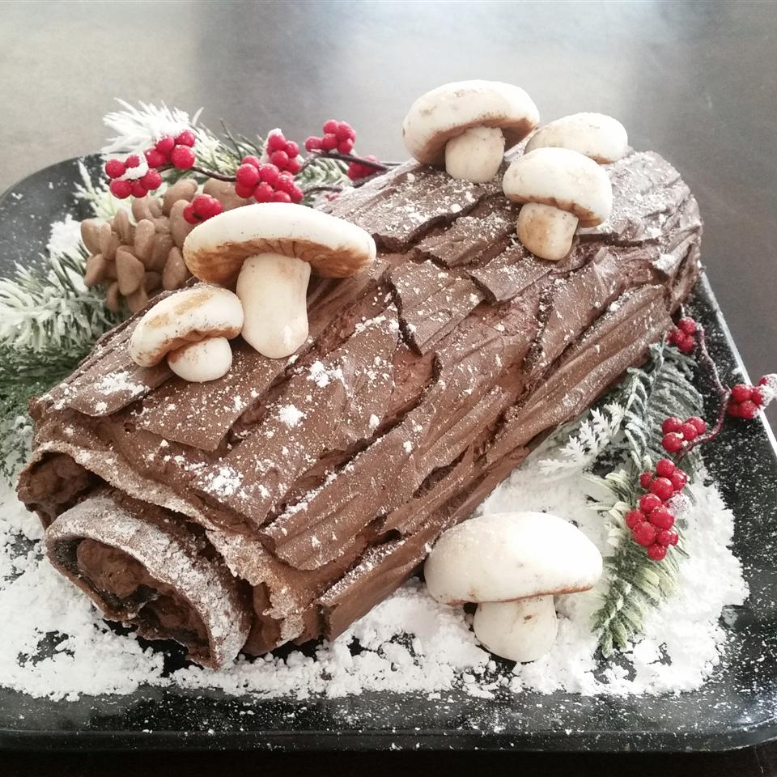

Buche de Noel

Buche de Noel is the French name for a Christmas cake shaped like a log. This one is a heavenly flourless chocolate cake rolled with chocolate whipped cream.
Traditionally, Buche de Noel is decorated with confectioners' sugar to resemble snow on a Yule log.
Ingredients:
- 2 cups heavy cream
- ½ cup confectioners' sugar
- ½ cup unsweetened cocoa powder
- 1 teaspoon vanilla extract
- 6 egg yolks
- ½ cup white sugar
- ⅓ cup unsweetened cocoa powder
- 1 ½ teaspoons vanilla extract
- ⅛ teaspoon salt
- 6 egg whites
- ¼ cup white sugar
- confectioners' sugar for dusting
Steps:
- Preheat oven to 375 degrees F (190 degrees C). Line a 10x15 inch jellyroll pan with parchment paper. In a large bowl, whip cream, 1/2 cup confectioners' sugar, 1/2 cup cocoa, and 1 teaspoon vanilla until thick and stiff. Refrigerate.
- In a large bowl, use an electric mixer to beat egg yolks with 1/2 cup sugar until thick and pale. Blend in 1/3 cup cocoa, 1 1/2 teaspoons vanilla, and salt. In large glass bowl, using clean beaters, whip egg whites to soft peaks. Gradually add 1/4 cup sugar, and beat until whites form stiff peaks. Immediately fold the yolk mixture into the whites. Spread the batter evenly into the prepared pan.
- Bake for 12 to 15 minutes in the preheated oven, or until the cake springs back when lightly touched. Dust a clean dishtowel with confectioners' sugar. Run a knife around the edge of the pan, and turn the warm cake out onto the towel. Remove and discard parchment paper. Starting at the short edge of the cake, roll the cake up with the towel. Cool for 30 minutes.
- Unroll the cake, and spread the filling to within 1 inch of the edge. Roll the cake up with the filling inside. Place seam side down onto a serving plate, and refrigerate until serving. Dust with confectioners' sugar before serving.